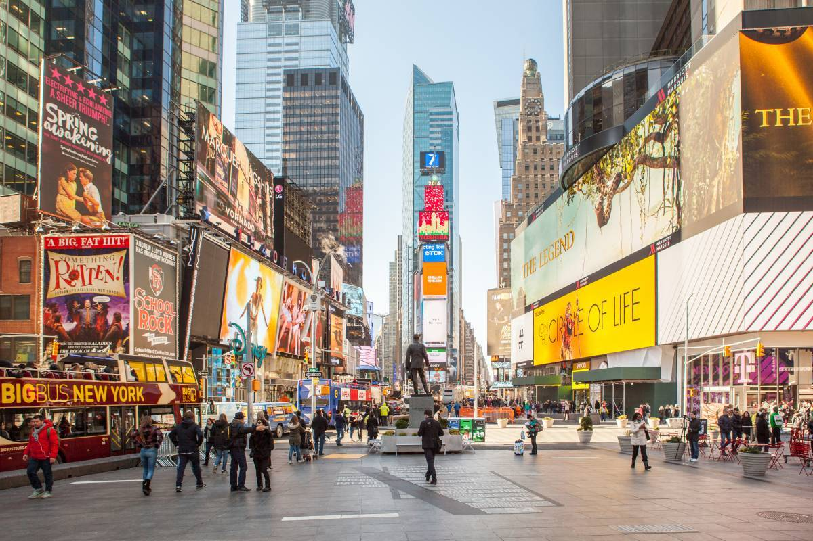

The true sections of New York City, not the Burroughs
As a real New Yorker you and everyone else in America knwos there are 5 Burroughs, but that really doens't tell much of a story.
I, as a real New Yorker can describe the real sections of New York.

First you ahev your Urban Conglomerate districts. Places where there are way too many tourists and Business districts typically. Funfact, before th Pandemic
we got over 65 million toursits in the city alone, so an average of around 1.25 million tourists a week combined with the 8.6 million residents, you can see
why the Pandemic screwed us. These places have a lot of housing too because density and we need the space, we don't even have alleys becuase it's a loss
of millions for real estate developers.
Next we have the Urban districts, where it's a misture of commercial properties and residential housing. These palces are where most people live, and known for being the most diverse places
in the world. Although sicne there more dense you can walk through some of them jsut like that, little Bangladesh only has a width of 5 blocks, and a much longer height.
neighborhoods seem somewhat segrated but the local parks are screaming with diversity. People from 200 nations and over 800 languages are in New Yrok City. This would be like FLushing.
Various ethnic neighborhoods are here, and only the real New Yorkers go here for the msot authentic food and culture such as any local Deli or Hala Street Food Carts, guranteed to
fill your taste buds.
The last one is the Suburban places, where our Huge Subway Lines avoid. These places are like your ordinary suburbs, but within 1-3 miles of a dense Urban core. Coming here, you won't
believe you're still in the city, it's mind bogling how seperated they are. Some of them even have farms such as the bottom half of Staten Island, not the Wu Tand Clan territory though, that's Urban.
These palces are jsut copy pastes of regular neighborhoods like Pelham in the Bronx, or Glendale in Queens.